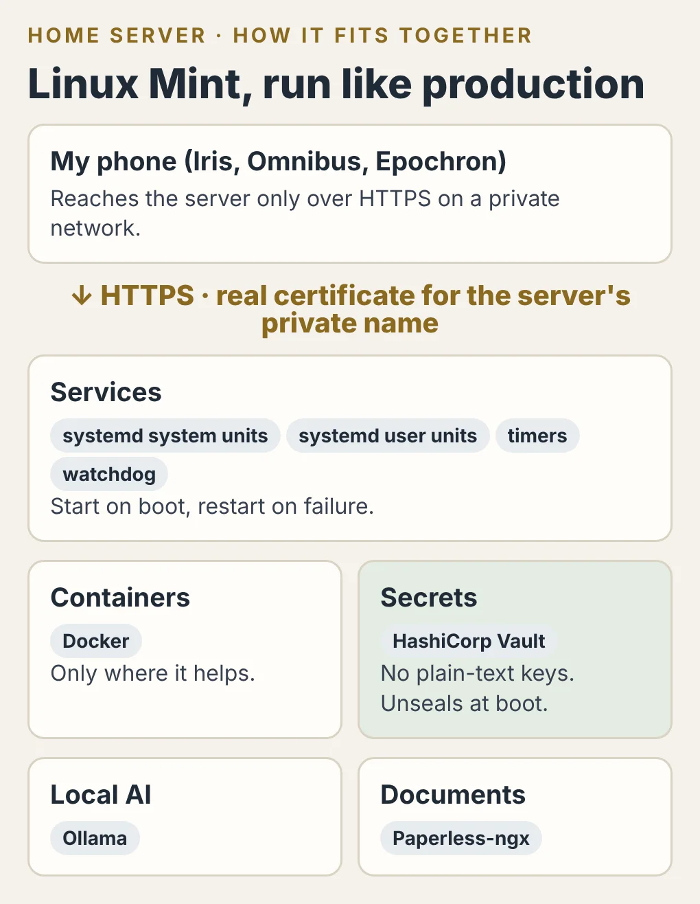
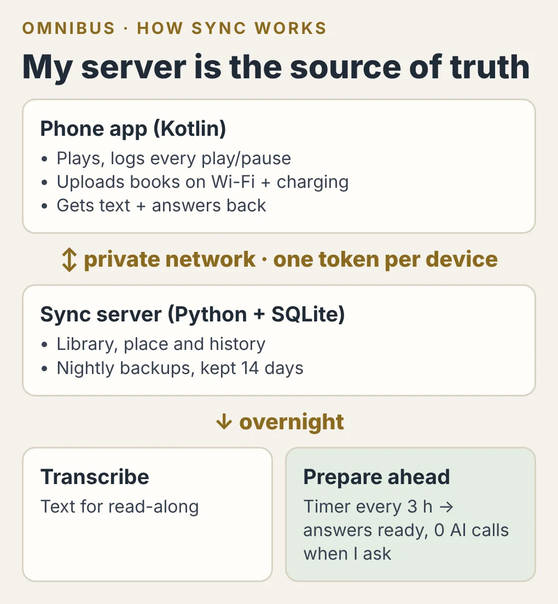

Hermes Linux App Studio — build & test passed: design checked, code written, compiled, tests run, every control pressed.
What it does: A self-hosted platform of AI-assisted tools — website, image and app-building studios, a phone companion app and a job-search hub — running on my own Linux server. Built with Claude under my direction. I directed 2,709 version-controlled changes since Jul 2026, each stage closed with a written handoff (403 so far) and backed by 199 automated test files.
Stack: Python, JavaScript, Linux Mint, systemd, Docker, git, HashiCorp Vault, a private network, Android (Capacitor).
A real problem it solved: A scanner silently showed zero results during a live phone test. I traced it to a duplicated function name and confirmed 81 results after the fix.
SonoVault
What it does: A study platform for certification exams: multi-subject course packs, spaced-repetition review (FSRS), an instructor review queue and encrypted content storage. Built with Claude under my direction.
A real problem it solved: I traced a live outage to a test build written into the production folder while the health check stayed green, restored service, and approved two guards: separate test-build folders and a health check that verifies the build. I also found the backup restore test could pass with every course image missing, and rebuilt it to check every stored file and restore from the off-site copy.
Home server

What it does: A Linux Mint server that runs my apps, Docker services, local AI models and document archiving. Services start on boot under systemd, secrets live in HashiCorp Vault, and my phone reaches it over HTTPS on a private network.
Stack: Linux Mint, systemd, Docker, HashiCorp Vault, a private network, Ollama, Paperless-ngx.
A real problem it solved: Restarts kept failing with “unit not found” and “start request repeated too quickly.” I found services split across systemd's system and user managers plus a stray process holding a port — fixed both and documented which service lives where.
What it does: A self-hosted system that monitors and manages my brokerage and crypto accounts, with daily caps, kill switches and shadow-first rollouts. Built with Claude under my direction. It started with a 10-day paper-trading trial before going live at one-tenth size.
A real problem it solved: Repeated false high-risk alerts came from failed price reads being counted as zero. I added a retry and a last-good-value guard, backed by 12 new tests.
Smaller projects
Well-built smaller apps, each with its own release and testing routine.

Omnibus
Audiobook player with its own sync server, overnight transcription and spoiler-safe story help. 133/133 phone tests.